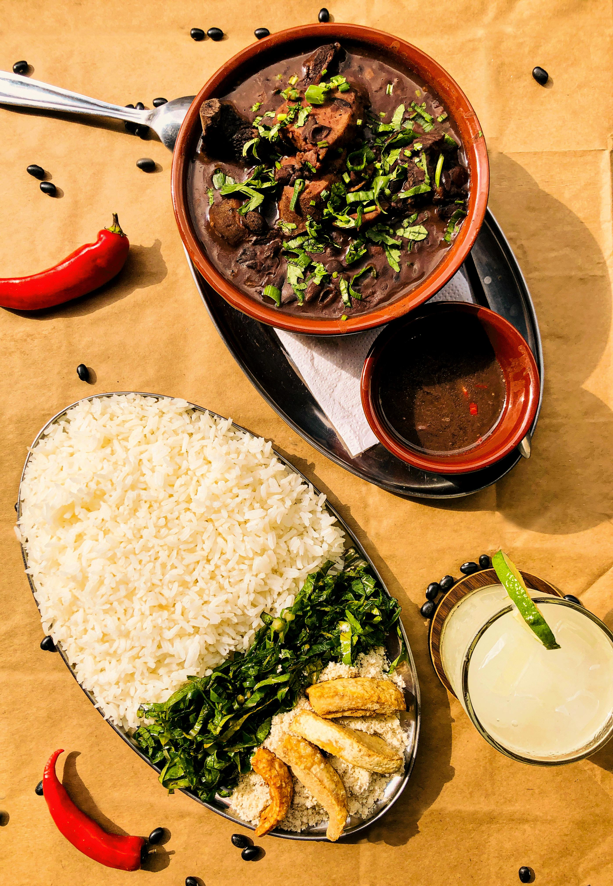

WANDER WOMEN
WANDER WOMEN
RIO DE JANEIRO Guide
You'll want to be a carioca too!
Top Tourist Spots
Discover Rio’s iconic landmarks and hidden gems, from the famous beaches to breathtaking viewpoints. Whether you’re a thrill-seeker or a relaxation enthusiast, Rio de Janeiro offers something for every traveler.
Christ the Redeemer
One of the New Seven Wonders of the World, this towering statue stands atop Corcovado Mountain, offering panoramic views of Rio and the surrounding bay. A must-see for anyone visiting the city, symbolizing Rio’s spirit and beauty.
Ipanema Beach
Known globally, Ipanema Beach is a lively destination with vibrant nightlife, cultural attractions, and golden sands. Perfect for sunbathing, surfing, and people-watching, it offers an authentic Rio experience and is famous for the song "The Girl from Ipanema."
Copacabana Beach
Famous for its 4 km stretch of golden sand, Copacabana Beach is perfect for beach lovers. A bustling spot with restaurants, bars, and beach sports, it provides a lively atmosphere perfect for relaxation or activity.
Sugarloaf Mountain
A signature sight in Rio, Sugarloaf Mountain offers stunning 360-degree views of the city. A cable car ride takes visitors to the top for unforgettable views of the beaches, bay, and surrounding mountains. It’s a must-do for panoramic vistas of Rio.
Escadaria Selarón (Selarón Steps)
A colorful and vibrant staircase located in the Lapa neighborhood, the Escadaria Selarón is a true work of art. Covered in over 2,000 brightly colored tiles, it is one of Rio’s most iconic landmarks and a perfect spot for photos and artistic exploration.
Cultural Encounters
Immerse yourself in Rio's rich cultural heritage by visiting its numerous museums and historical sites.
Music
Rio de Janeiro's music scene is defined by samba's lively rhythms, bossa nova's smooth melodies, and funk carioca's energetic beats. Samba, deeply rooted in Afro-Brazilian tradition, is central to Rio's Carnival. Bossa nova, emerging in the late 1950s, blends samba with jazz influences. Funk carioca, originating from the favelas, combines electronic beats with traditional rhythms. Artists like João Gilberto, Antônio Carlos Jobim, and Anitta have significantly shaped these genres.
Events
- Carnival: An annual festival held before Lent, featuring vibrant parades, samba dancing, and street parties that fill the city with energy and color.
- New Year's Eve (Réveillon): A massive celebration on Copacabana Beach, where millions gather to watch fireworks, listen to live music, and celebrate the coming year.
- Festa Junina: Celebrated throughout June, these festivals honor saints like Santo Antônio, São João, and São Pedro with traditional foods, music, and dances such as the quadrilha.
Sports

In Rio de Janeiro, soccer isn't just a game—it's a vibrant cultural heartbeat, pulsing through legendary matches at the historic Maracanã Stadium and igniting fierce rivalries among iconic clubs like Flamengo, Fluminense, Botafogo, and Vasco da Gama.
Carioca
Radiating the quintessential Carioca vibe, Rio's locals effortlessly blend sun-kissed beach days, lively samba nights, and a warm, welcoming spirit, all while rocking their signature bleach blonde hair.
Gastronomic Delights
Savor the flavors of Rio through its diverse culinary offerings, from traditional Brazilian dishes to international fusion cuisine. *All can be veganized or vegetarianized*
To Eat
- Feijoada:  A hearty black bean stew with various cuts of pork, traditionally enjoyed on Saturdays. It's typically served with rice, collard greens, and orange slices.
- Açaí:
 A refreshing bowl of frozen açaí pulp blended into a smoothie, topped with granola, bananas, and other fruits. It's a popular choice for breakfast or as a healthy snack.
A refreshing bowl of frozen açaí pulp blended into a smoothie, topped with granola, bananas, and other fruits. It's a popular choice for breakfast or as a healthy snack.
- Pão de Queijo: Cheese-filled bread bites made from tapioca flour, crispy on the outside and soft inside. Enjoyed as a snack or breakfast treat, best paired with strong Brazilian coffee.
- Coxinha: Deep-fried croquettes filled with shredded chicken, shaped like a teardrop, and coated in breadcrumbs. A savory snack commonly found at street vendors and parties.
- Brigadeiro: A beloved chocolate truffle made from condensed milk, cocoa powder, butter, and chocolate sprinkles. Often served at celebrations and as a sweet treat.
Restaurants
- Açougue Vegano
- ASA Açaí Ipanema
- Leme
- Buffet Gloria
Beach Eats
- Coconut Water
- Queijo Coalho
- Empada
- Açaí
- Corn
- Biscoito Globo
- Mate
Where to Stay
Dive into Rio's vibrant hospitality scene, where each neighborhood offers a unique blend of style, culture, and adventure.
Discovery Hostel
Located in the historic Glória neighborhood, Discovery Hostel is set in a restored colonial building, just 50 meters from Glória Subway Station and 300 meters from Flamengo Beach. The hostel offers a clean, open, and friendly social environment, making it an ideal base for travelers exploring Rio. Amenities include a fully equipped kitchen, computer lounge, reception with tourist information desk, TV area, bar, and a chill-out patio. Guests can also enjoy customized beds with thick mattresses, large lockers, personal control lights, and air conditioning for a comfortable stay.
El Misti Hostel Ipanema
Situated just a 40-second walk from Ipanema Beach and close to various bars and restaurants, El Misti Hostel offers a vibrant atmosphere in the heart of the Ipanema neighborhood. The hostel provides mixed dormitories accommodating 4 to 12 people, as well as private rooms, all equipped with air conditioning and private bathrooms. Guests can enjoy amenities such as free Wi-Fi, a 24-hour front desk, an on-site bar, and a partnership with a nearby beach tent offering discounted drinks and affordable beach chair and sunshade rentals.
Che Lagarto Hostel Copacabana
Located just two blocks from Copacabana Beach and one block from Cardeal Arcoverde subway station, this hostel offers an unbeatable location for travelers. Guests can enjoy amenities such as free internet, a rooftop pool, bar/lounge, breakfast buffet, rooftop terrace, and shared bathrooms.
Selina Lapa Rio de Janeiro
Situated in the historic Lapa neighborhood, Selina offers proximity to theaters, concert halls, museums, and Rio's vibrant nightlife. The hostel features a rooftop terrace with impressive views, an on-site restaurant, bar/lounge, and individually decorated rooms with en-suite facilities, some with balconies.
Souvenir Ideas
Things to remember Rio by:
Havaianas
Slip into Rio's laid-back beach vibe with these colorful, comfortable sandals. A staple since '62, they're perfect for the sun-soaked streets and sands.
Canga
These versatile, vibrant wraps serve as both beach towels and stylish cover-ups, adding a tropical touch to any setting.
Dental Floss Swimsuits
Embrace Rio's bold beach fashion by rocking these ultra-minimalist swimsuits, known locally as 'fio dental.' These daring designs, popularized in the 1970s, offer minimal coverage and are a staple on Rio's sun-drenched shores. Whether you're soaking up the sun or taking a dip, these swimsuits ensure you do it in true Carioca style.
Brasil Flag Shirts and Shorts
Show off your Brazilian pride with stylish clothing featuring the vibrant green, yellow, and blue of the national flag. From casual tees to sporty shorts, these pieces are perfect for embracing Rio's lively spirit. Whether you're hitting the beach or exploring the city, wearing the flag's colors adds a festive touch to your look. Plus, during major events like the World Cup, these items become even more popular, symbolizing national unity and celebration.
Staying Safe
To do:
1: Have Fun
2: Stay Safe
Secure Your Belongings
- Use Anti-Theft Accessories: Opt for cross-body bags or money belts with secure closures to keep your valuables safe. Anti-theft backpacks are also highly recommended.
- Be Cautious with Phones: Avoid using your phone in crowded areas or on the beach to minimize the risk of theft. If you must use it, do so discreetly and keep it secured via phone chains.
Blend in with Local Culture
- Beach Attire: Brazilians typically use sarongs or "cangas" instead of towels on the beach. Women often wear thong-style bikinis, while men wear tight-fitting trunks known as "sungas." Embracing this attire can help you blend in with locals.
- Clubbing Dress Code: When visiting nightclubs, dress stylishly but modestly. Avoid overly revealing clothing and flashy accessories. Many venues have a dress code, so it's advisable to check in advance.
- Use of Portuguese Phrases: Learning basic Portuguese phrases such as "Olá" (Hello), "Por favor" (Please), and "Obrigado/Obrigada" (Thank you) can enhance your interactions with locals and show respect for their culture.
Exercise Caution with Strangers
- Avoid Overly Friendly Approaches: Be cautious if strangers approach you with overly friendly gestures, as this can be a tactic used by pickpockets. Always maintain awareness of your surroundings.
- Stay Alert to Common Scams: Be aware of common scams, such as individuals claiming you have pigeon droppings on your shoulder and offering to help clean it off, which can be a distraction for theft.
Transportation Safety
- Use Reputable Ride-Sharing Services: When traveling by car, use reputable ride-sharing apps like Uber or 99. Avoid accepting rides from unmarked vehicles or unsolicited offers.
- Be Cautious with Taxi Services: If using taxis, ensure they are registered and use the meter. Agree on the fare beforehand if the meter is not available.
Beach Safety
- Rent Beach Equipment from Authorized Vendors: On Rio's beaches, renting chairs and umbrellas from authorized vendors ensures fair pricing and reduces the risk of scams. Prices for two beach chairs and an umbrella should not exceed 30 BRL for the entire day.
- Stay Vigilant on the Beach: Keep an eye on your belongings at all times. Avoid leaving valuables unattended, even for short periods, and be cautious when approached by beach vendors.
Phone Theft Awareness
- Be Vigilant in Public Spaces: Using a cell phone in public spaces can make you a target for thieves. Criminals can often identify tourists and may attempt to snatch your phone without you realizing.
- Keep Phones Secure: Consider using anti-theft apps that can remotely lock or erase your phone if stolen. Report stolen devices to local authorities promptly.
Stay Informed and Prepared
- Know Emergency Contacts: Keep a list of emergency contacts, including local authorities and your country's embassy or consulate.
- Trust Your Instincts: If a situation or area feels uncomfortable, trust your instincts and remove yourself from it. Prioritize your safety at all times.
Embassy and Contact Information
- Address: Avenida Presidente Wilson, 147 – Castelo
20030-020 – Rio de Janeiro, RJ, Brazil - Phone: +55-21-3823-2000
- Emergency After-Hours Phone: +55-21-3823-2029
- Fax: +55-21-3823-2003
- Email: RioACS@state.gov
- Website: U.S. Consulate General Rio de Janeiro
- More Info Before You Go
Language
Você não fala????
Practice
- Onde fica...? (Where is...?)
- Qual é o preço? (What is the price?)
- Eu não entendo. (I don't understand.)
- Você fala inglês? (Do you speak English?)
- Bom dia! (Good morning!)
- Boa noite! (Good night!)
- Obrigado/Obrigada (Thank you)
- Tá/ tá bom (Okay)
- Duolingo: A free app to learn Portuguese with interactive lessons.
- Memrise: A free platform with courses in Portuguese, focusing on vocabulary and pronunciation.
- BBC Languages: Offers free resources for learning Portuguese, including audio and video lessons.
- Busuu: A free language learning app that helps with speaking, listening, and reading Portuguese.
Language Learning Resources: